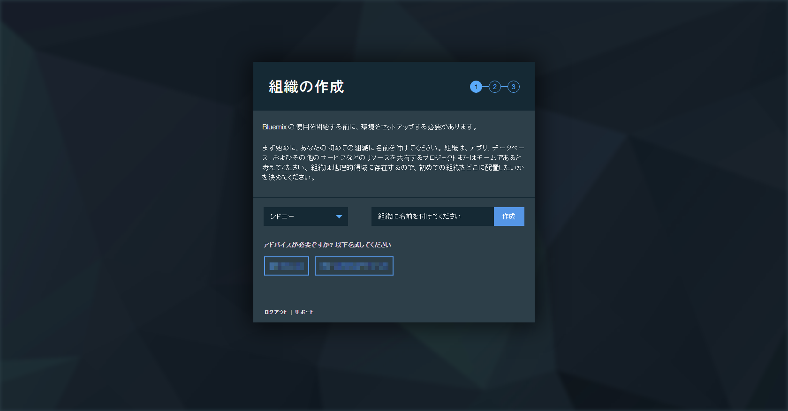
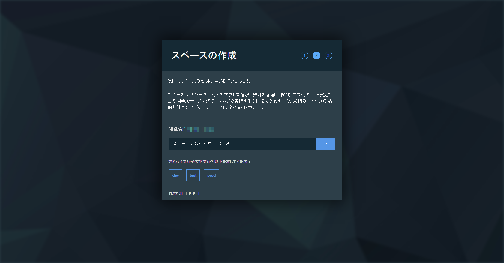
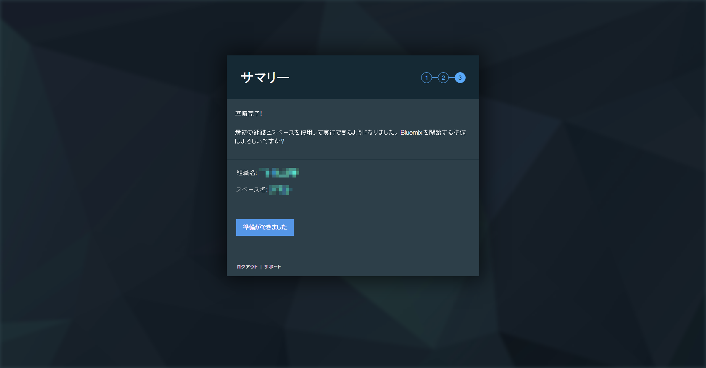
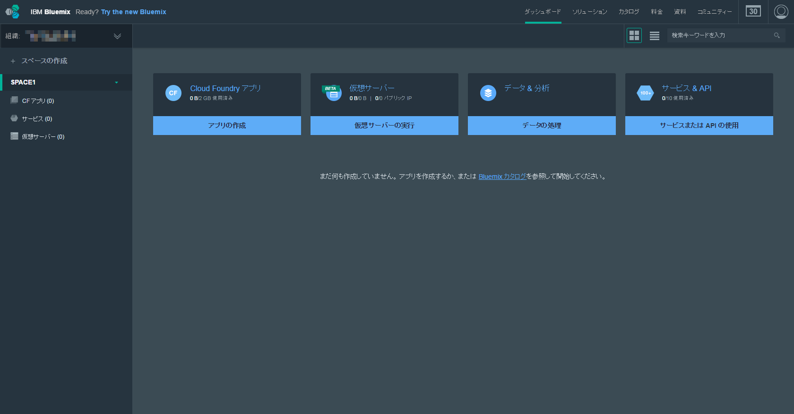
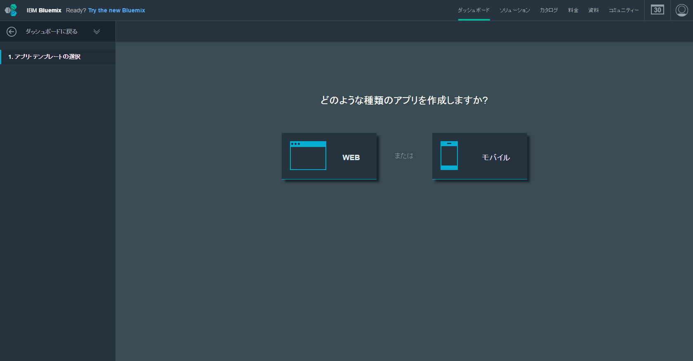
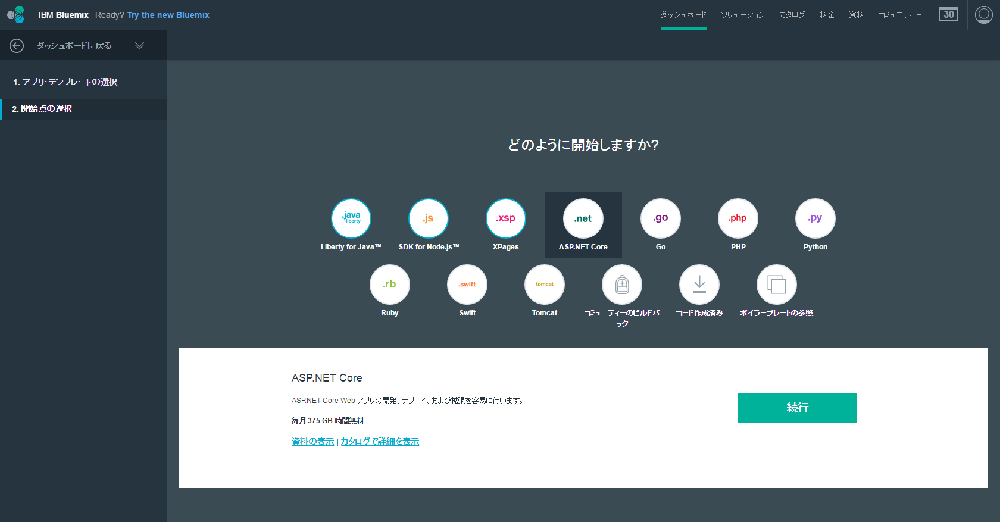
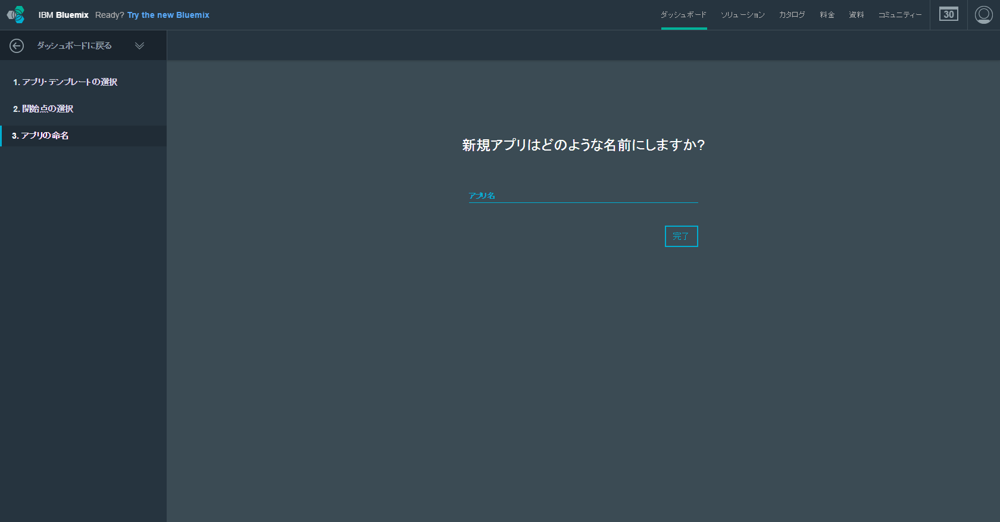
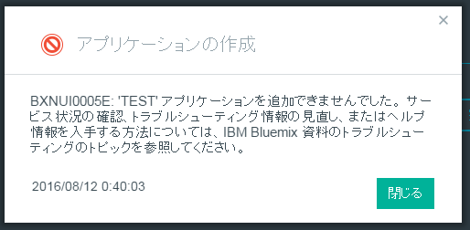
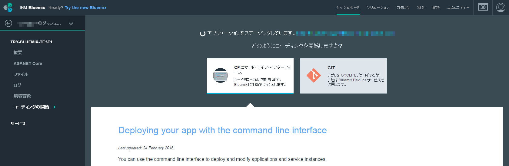
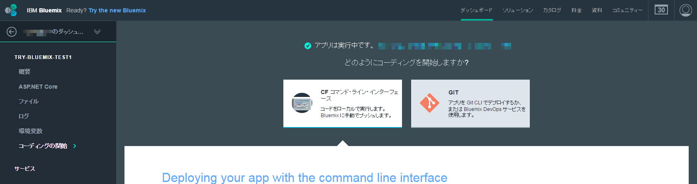

前回はアカウントを作りました。
お金の心配
無料で利用できると言っても、それは一定の制限の中です。
IBW Bluemixの場合、2016年8月の時点で、http://www.ibm.com/developerworks/jp/bluemix/credit.html によれば、以下の条件なら無料で利用できます。
ランタイムは、IBM 提供のランタイムごとに 1ヶ月 375GB 時間まで無料。
たとえば 512MB の Java アプリ 1 インスタンスを 1ヶ月使用すると、0.5GB x 31日 x 24時間 = 372GB 時間となり、無料枠の範囲内で使用できます。
(IBM以外が提供するランタイムの場合、全ランタイムのGB時間の合計で 375GB 時間まで無料）
とりあえず、お勉強程度なら、そんなメモリを大量に必要とするアプリでもなければ、無料で遊べますよ、ってことです。
流石、IBM、太っ腹です。
初期設定
前回ログインした直後に初期設定を促されたので、それを済ませましょう。
- 組織の作成。組織名は入力必須。組織名は世界中で一つだけの模様。

シドニー、英国、米国南部しかないです
{kind=link}
- スペースの作成。特に名前は気にする必要はなさそう。

名前は適当
{kind=link}
- 準備完了

YES!!
{kind=link}
アプリの用意
初期設定が終わったので、次はアプリの用意をします。
- 新しくアプリを作成します。「アプリの作成」をクリック

「アプリの作成」をクリック
{kind=link}
- 「WEB」をクリック

「WEB」をクリック
{kind=link}
- 「ASP.NET Core」をクリックし、続行をクリック

「ASP.NET Core」をクリック
{kind=link}
- お好みのアプリ名を入力し、「完了」をクリック。ただし、ここも世界中で唯一のアプリ名である必要があります。

アプリ名を入力
{kind=link}
5．ありがちなアプリ名を入力した場合

エラーの意味がわかりにくすぎます
{kind=link}
- 作成に成功した後、Bluemix側で作業中になります。1分くらいがかかります。

ステージング中
{kind=link}
- 「アプリは実行中」に変化しました。

完了
{kind=link}
Conclusion
アプリの下地ができあがりました。次こそコーディングを….